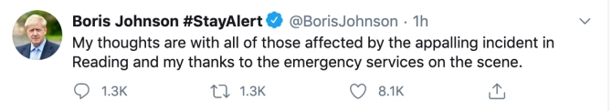

DNBC NEWS
DNBC NEWS
DNBC NEWS
HIGH ALERT Reading stabbings – Boris Johnson vows to change laws if needed & learn lessons
Samantha LockNatasha Clark 21 Jun 2020, 11:32 Updated: 22 Jun 2020, 1:36
BORIS Johnson today said he wouldn't hesitate to change the law if needed to - to stop sick incidents like the Reading stabbing attack from happening again.
The Prime Minister told media today he would see if there are lessons to learn from the "appalling" event where at least three were killed.
Cops confirmed three people had died, while another three people were seriously injured.
In a clip on Sunday lunchtime the PM said: "I'm appalled and sickened that people should lose their lives in this way and our thoughts are very much with the families and friends of the victims today."
Police were working on "getting to the bottom" of exactly what happened, and one person was currently in custody.
He added: "If there are lessons that we need to learn about how we handle such cases, how we handle the events leading up to such cases, we will learn those lessons, and we will not hesitate to take action when necessary."
He clarified: "If there are changes that need to be made to our legal system to stop such events happening again we will not hesitate to take that action, as we have before over the automatic early release of terror offenders."
The PM denied that more incidents such as this could happen in future as a result of the pandemic.
He said: "Crime overall had been coming down, I am very pleased we have got large numbers of officers out on the streets now.
"And we are recruiting 20,000 more."
He also shared his support by tweeting: "My thoughts are with all of those affected by the appalling incident in Reading and my thanks to the emergency services on the scene."
Meanwhile, Labour's boss Sir Keir Starmer said he wants to "speak to the PM to discuss how together we can improve the response and learn from this, whether there need to be changes to the law."
And he added: "The investigation must be completed, but this is not a time for party politics."It is incumbent on all of us to pull together in response to this."
Distressing video on social media showed people lying on the ground, as witnesses and officers sprinted to their aid.
In the footage which has since been shared online, officers were seen giving CPR to the victims who were covered in blood.
One person can be heard shouting: "He's still breathing", while another, presumably a medic, is asking for a defibrillator.
A security source said that the man who has been arrested is Libyan.
One eyewitness, who said he was around 10 metres from the scene, said the attack looked "completely random".
Lawrence Wort, 20, a personal trainer from Chippenham, said: "So the park was pretty full.
"A lot of people sat around drinking with friends when one lone person walked through, suddenly shouted some unintelligible words and went around a large group of around 10, trying to stab them.
"He stabbed three of them, severely in the neck, and under the arms, and then turned and started running towards me, and we turned and started running.
"When he realised that he couldn't catch us, he tried to stab another group sat down, he got one person in the back of the neck and then when he realised everyone was starting to run, he ran out the park."
Another witness, named Dan, told The Daily Mirror he saw blood spurting and victims dropping "like a weight" as a man appeared to be "tapping them on the head".
The 26-year-old said: "I thought they were playing duck duck goose and thought someone had been sick, we realised it was blood spraying out."
The knifeman "shouted some unintelligible words," according to another witness, before stabbing his victims in the neck and under their arms.
A hero police officer also reportedly spotted the suspect running away with a knife and "rugby tackled him to the ground."
Thames Valley Police said: "Police attended at around 7pm along with other emergency services.
"Officers arrested a man at the scene who is now in police custody.
"A number of people sustained injuries and were taken to hospital.
Home Secretary Priti Patel tweeted: "Deeply concerned to hear reports of an incident in Reading.
"My thoughts are with everyone involved, including police and emergency responders at the scene."


{kind=link}